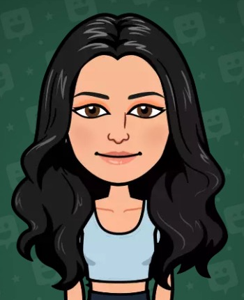
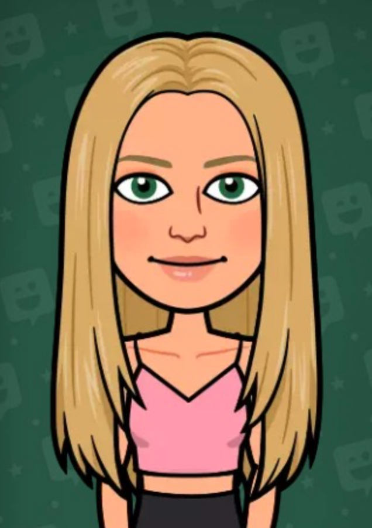
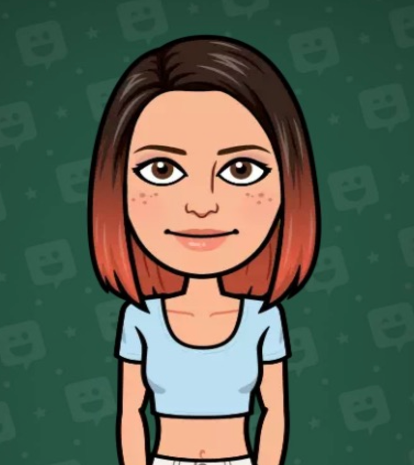
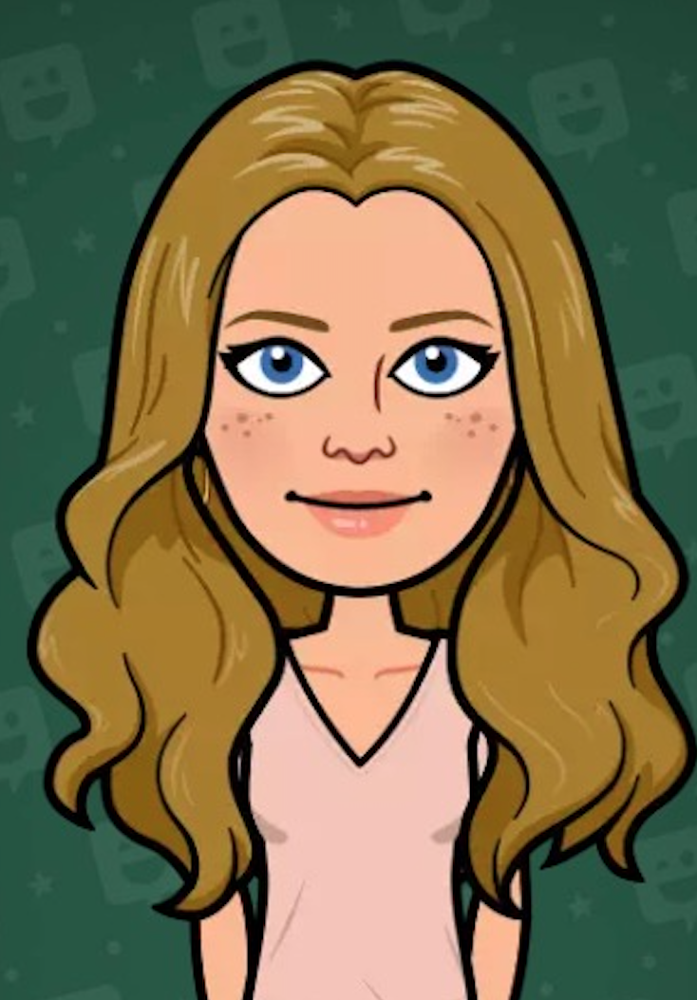

Why Morse Code Bracelets?
We have decided to make Morse Code Bracelets because they are very unique. Our initial product was not going to be morse code braclets but when we found them, we knew that we just had to make them. These bracelets are unique and special and are bracelets that stand out from the rest! We hope you like our bracelets and support our company!
About Us





Elyssa
Elyssa's (picture on top left) favorite color is blue. She loves to dance, cook, and bake. Elyssa likes morse code bracelets because it promotes positivity and can be given to almost anyone! She also likes it because it can both be worn and can also be decoration.